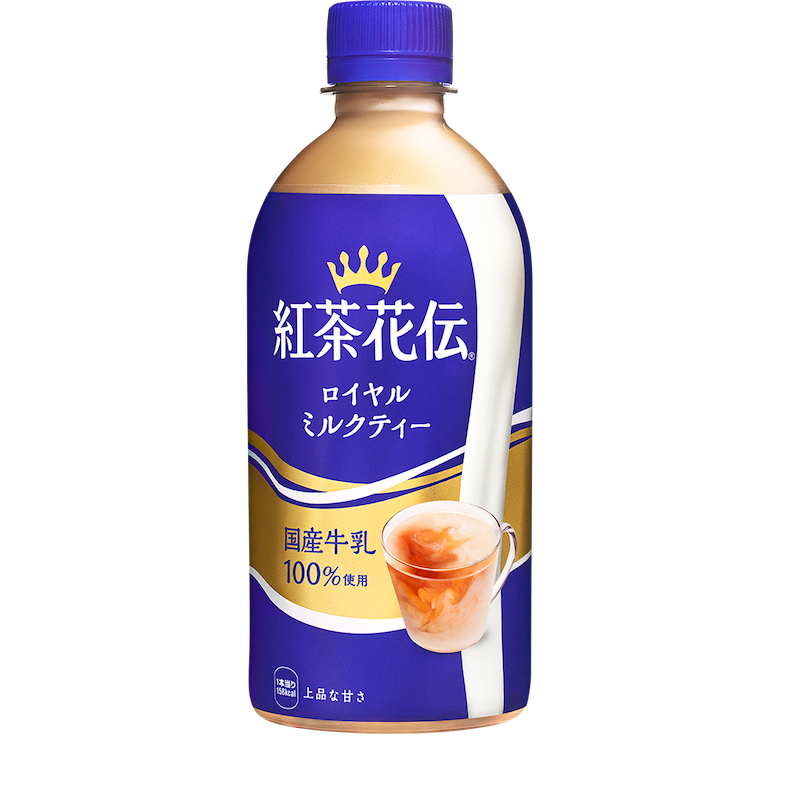
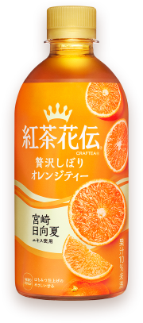
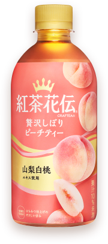
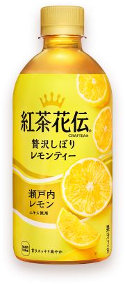

| 種類 |
写真 |
紹介 |
|
ロイヤルミルクティー |
 |
1995年の発売以来、上品な甘さとすっきりした後味の上質なミルクティーとして多くの方にご愛飲いただいているロングセラー製品。国産牛乳100%の上質なミルクの味わいと手摘みセイロン茶葉を100%使用した素材へのこだわりはそのままに、紅茶本来の豊かな味わいを引き立たせています。さらに、紅茶とミルクのバランスを徹底して追求することで、上品な甘さとすっきりとした後味のミルクティーへと進化しました |
詳しく見る。。。 |
| 贅沢しぼりオレンジティー |
 |
紅茶と果実（国産果実＋厳選果汁）にこだわった、やさしい甘さのフルーツティーです。 厳選した手摘みセイロン茶葉を100％使用した紅茶に、宮崎日向夏エキスとおいしいところを贅沢にしぼった果汁を加え、仕上げにはちみつを使用。 香り豊かな本格的な紅茶の味わいとフレッシュな果汁感を、すっきりとした甘みでお楽しみいただけます |
詳しく見る。。。 |
| 贅沢しぼりピーチティー |
 |
手摘みセイロン茶葉100%の紅茶と、おいしいところだけを贅沢にしぼったピーチ果汁と山梨白桃エキスなど、素材へのこだわりはそのままに、さらに紅茶の味わいを引き立てることでよりすっきりとした後味に仕上げました |
詳しく見る。。。 |
| 贅沢しぼりレモンティー |
 |
厳選素材に、おいしいひと手間をかけた上質なレモンティーです。素材と製法へのこだわりから、爽やかな瀬戸内レモンエキスと厳選レモン果汁、100%手摘みのセイロン茶葉2倍※1の香り豊かな紅茶を絶妙なバランスでブレンドしました。そこに、仕上げのはちみつで甘さスッキリに整えた味わいを仕事中や家事の合間のリフレッシュにお楽しみいただけます。 |
詳しく見る。。。 |
| 白ぶどうフルーツティー |
 |
おいしいひと手間をかけた爽やかな甘みとすっきりとした後味のフルーツティーです。手摘みセイロン茶葉100%の紅茶と、長野県産シャインマスカットエキスと白ぶどうを主役にピーチ、リンゴ、オレンジ、レモン、マンゴー※1の6種の果実の味わいを絶妙にブレンド。仕上げにはちみつを加えることで爽やかな甘みに仕上げています。 |
詳しく見る。。。 |
| とろけるピーチティー |
 |
ゼリー仕立ての斬新な食感のデザートティーです。日常の中のちょっとした贅沢や頑張った自分へのご褒美を楽しみたいというニーズの高まりに対し、手摘みセイロン茶葉とたっぷりピーチ果汁の素材へのこだわりに加え、コカ・コーラ社独自の技術でゼリー仕立てのとろみのある新食感を実現しました。口の中でとろけるような贅沢な味わいで、紅茶でありながらもデザートを食べているような満足感をお楽しみいただけます |
詳しく見る。。。 |